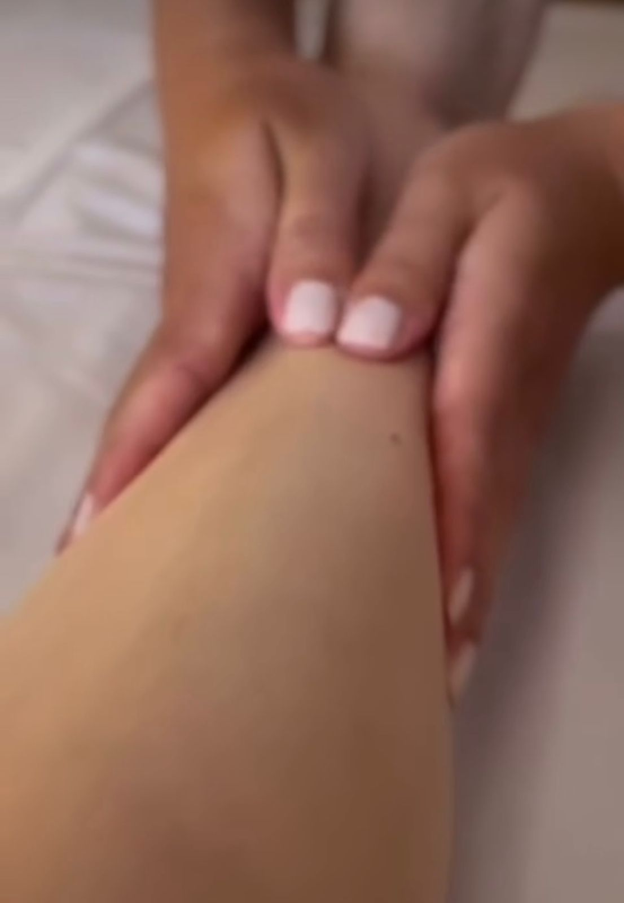

01
Massoterapia
Atendimento voltado para relaxamento, redução de tensões e sensação de bem-estar, ajudando o corpo a sair do estado de sobrecarga do dia a dia.
Atendimento individual com foco em escuta, técnica e atenção aos detalhes, unindo massoterapia, liberação miofascial e acupuntura para promover alívio, equilíbrio e qualidade de vida.
O atendimento é pensado para quem sente o corpo sobrecarregado, convive com tensões acumuladas ou busca um momento de cuidado real, com atenção individual e um olhar mais completo para o bem-estar.
Massoterapia
Liberação Miofascial
Acupuntura

Gabriela Nadal é enfermeira e massoterapeuta, pós-graduanda em acupuntura, com atuação voltada ao cuidado corporal, alívio de tensões e promoção do bem-estar.
Seu atendimento combina conhecimento técnico, terapias manuais e escuta individual, buscando entender cada necessidade para oferecer uma experiência mais acolhedora e eficaz.
Cada técnica é aplicada conforme a necessidade de cada pessoa, respeitando o momento do corpo e o objetivo do atendimento.
Atendimento voltado para relaxamento, redução de tensões e sensação de bem-estar, ajudando o corpo a sair do estado de sobrecarga do dia a dia.
Técnica indicada para trabalhar pontos de tensão, desconfortos musculares e limitações de movimento, contribuindo para mais mobilidade e alívio.
Recurso terapêutico utilizado para favorecer equilíbrio, reduzir dores e auxiliar no cuidado do corpo de forma integrada.
O objetivo do atendimento é fazer você perceber diferença real no corpo e no dia a dia, com mais conforto, relaxamento e bem-estar.
Mais do que uma sessão, a proposta é oferecer uma experiência de cuidado com atenção, presença e olhar individual para cada necessidade.
Entender o que o corpo está mostrando faz parte do processo de cuidado.
Aplicação cuidadosa, respeitando cada pessoa, sua rotina e seu momento.
Um espaço pensado para transmitir tranquilidade, conforto e confiança.
Se você procura massoterapia em Veranópolis, liberação miofascial em Veranópolis ou acupuntura em Veranópolis, entre em contato para agendar seu atendimento com Gabriela Nadal.
Alívio, bem-estar e melhora na rotina de quem já cuidou do corpo com acompanhamento profissional.
"Oi! Bem mais aliviada 🙏🥰"
Ana C.
Massoterapia
"Inclusive fiquei muito bem depois de quinta. O tapping ajudou bastante, treinei com ele e realmente segurou bastante. As costas também melhoraram muito, enxaqueca não tive mais também."
Lucas M.
Liberação Miofascial + Taping
"Gabii, muito obrigada! Tô super bem da dor, melhorei bem, muito obrigada mesmo!"
Fernanda S.
Massoterapia
"Ontem saí nova! Guria, tu é mágica 🙏"
Juliana R.
Acupuntura
Rua Alfredo Chaves, 725, sala 02 – Centro.
Ambiente preparado para um atendimento tranquilo e acolhedor.
Fale diretamente pelo WhatsApp para tirar dúvidas e marcar seu horário.
Falar no WhatsApp